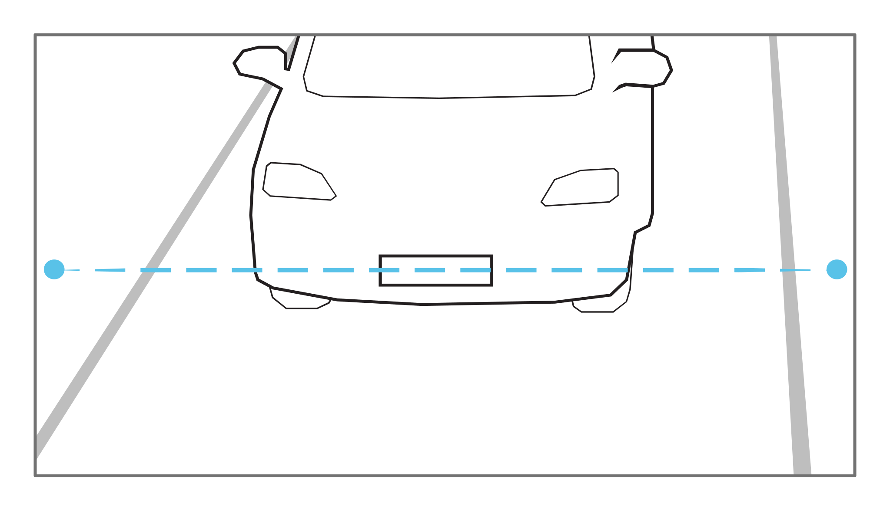

3. Kadr¶
Podczas dostosowywania kadru - pola widzenia (ang. Field-of-View, FoV) kamery ANPR - czyli zmiany ogniskowej obiektywu i ostrości, należy przestrzegać następujących zaleceń:
3.1. Linia detekcji¶
Linia detekcji to wirtualna pozioma linia w polu widzenia (FoV), która wskazuje, gdzie powinna nastąpić oczekiwana detekcja tablicy rejestracyjnej. Najczęściej jest to linia w środku wysokości pola widzenia:
{kind=link}
Wymagania wymienione w poniższych podsekcjach dotyczą parametrów tablicy rejestracyjnej zlokalizowanej na linii detekcji.
3.2. Szerokość kadru¶
Ustawienie szerokości FoV zależy od liczby obserwowanych pasów ruchu (patrz punkt Pasy ruchu). Najczęściej optymalna szerokość wynosi 6 m na wysokości linii detekcji.
Dla jednego pasa ruchu szerokość kadru powinna zachodzić na ok. 25% na przyległe pasy:
Dla dwóch pasów ruchu szerokość kadru będzie dokładnie obejmować dwa pasy:
{kind=link}
3.3. Wysokość kadru¶
Ustawienie wysokości FoV zależy od dwóch czynników:
minimalna wysokość znaków (opisana w następnej sekcji),
maksymalna prędkość pojazdu (w połączeniu z liczbą klatek na sekundę - FPS).
Silnik ANPR wymaga, aby dla danego przejazdu pojazdu w polu widzenia tablica rejestracyjna była widoczna (rozpoznana) co najmniej dwa razy. Oznacza to, że pole widzenia na wysokość musi obejmować wystarczająco duży odcinek drogi, aby tablica rejestracyjna była widoczna (czytelna) dwa razy przy maksymalnej prędkości. Jednocześnie powinny być spełnione inne wymagania.
W tym przypadku użytkownik może modyfikować powiększenie, kąt  i FPS kamery.
i FPS kamery.
3.4. Rozmiar znaków¶
Zalecana wysokość znaków tablicy rejestracyjnej na linii detekcji wynosi  pikseli.
pikseli.
{kind=link}
Ostrzeżenie
Wymagana wysokość odnosi się do obrazu przetwarzanego przez silnik ANPR, a nie do natywnego obrazu z kamery. Obecnie obraz jest resamplowany do rozdzielczości 1024x576 pikseli, nawet jeśli natywna rozdzielczość kamery wynosi 8 megapikseli.
Wysokość znaku wynosząca 16 pikseli w przetworzonym obrazie jest uważana za optymalną gęstość pikseli. Silnik może nadal rozpoznawać tablice z mniejszymi wysokościami znaków (nawet do 10-12 pikseli na znak w obrazach bez zakłóceń). Jednak silnik nie odrzuci wyników wyłącznie na podstawie wielkości piksela znaku.